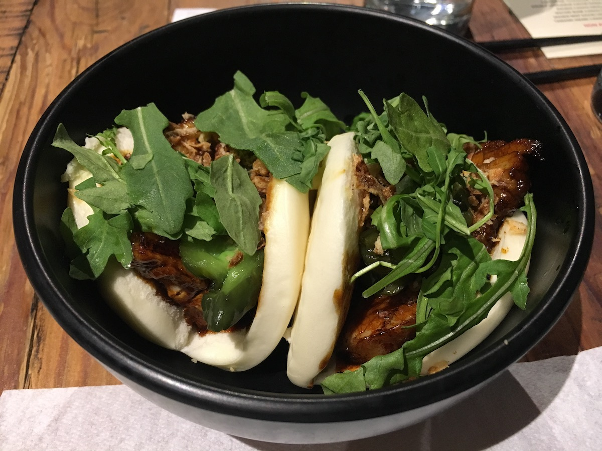

Latest Updates
Bar Virgile
8.7
Sister Liu's Kitchen
8.4
Pupuseria La Metapaneca
8.3
Naan Stop
7.3
Aladdin's Eatery
7.5
Hutchins Garage
8.7
Saltbox
9.1
Guasaca
8.1
Juice Keys
8.5
Vivo Ristorante
8.4
Q Shack
8.9
Viceroy
9.1
Seebeck's List
RDU Favs
Outside RDU Favs
Best Dishes
Log In
Top Ten - RDU
9.2
Mothers & Sons
9.1
Viceroy
9.1
Saltbox
8.9
Q Shack
8.9
M Tempura
8.9
True Flavors
8.8
M Kokko
8.8
Gocciolina
8.7
Hutchins Garage
8.7
Bar Virgile
Top Dishes - RDU
Pizza
Hutchins Garage
Burger
Bar Virgile
Tacos
Gonza
Ramen
M Kokko
BBQ/Wings/Fries
Q Shack
Pasta
Mothers and Sons
Seafood
Saltbox
Pancakes
Jack Tar
Eggs Benedict
True Flavors
Indian Curry
Viceroy (Mykanwala)
DURHAM: Fried seafood at
Saltbox
.

DURHAM: Pork Buns at
M Kokko
.
DURHAM: Fried Catfish Eggs Benedict at
True Flavors
.
Previous
Next
ROME: Pizza at
Antico Forno Roscioli
.
LA: Ramen at
Daikokuya
.
VA BEACH: Tacos from a private vendor.
Previous
Next
Top Ten - Outside RDU
9.5
Antico Forno Roscioli (Italy)
9.4
Private Vendor Tacos (VA)
9.4
King Taco (LA)
9.3
Roscoe's (LA)
9.3
Dal Moro's (Italy)
9.2
Ignazio's (NYC)
9.2
John's of Bleecker St (NYC)
9.2
Bang Bang Burgers (Charlotte)
9.1
Daikokuya (LA)
9.1
Marugame Udon (LA)
Top Dishes - Outside RDU
Pizza
Antico Forno Roscioli (Italy)
Pizza (US)
Ignazio's (NYC)
Burger
Bang Bang (Charlotte)
Tacos
Private Vendor (VA)
Ramen
Daikokuya (LA)
Pasta
Dal Moro's (Italy)
Seafood
Magnolia's (SC)
Chicken & Waffles
Roscoe's (LA)
Dumplings
Din Tai Fung
Udon
Marugame Udon (LA)